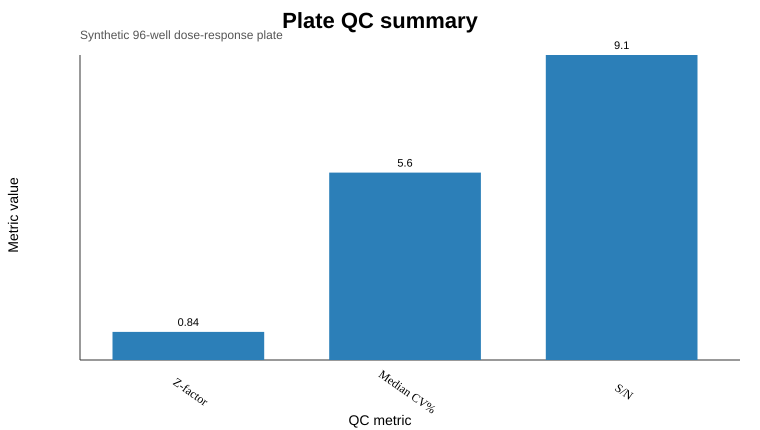
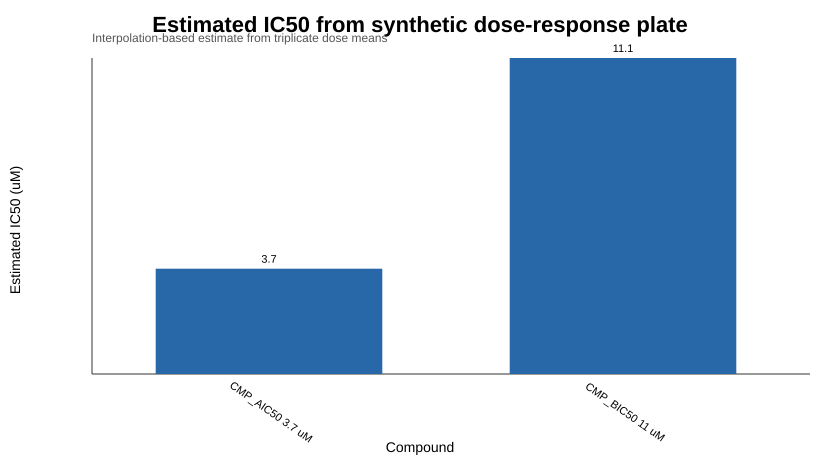

Bench to Bytes portfolio analysis report. Public data sources are named explicitly.
A plate-reader workflow can flag assay quality and estimate compound potency without manual spreadsheet handling.
Synthetic 96-well plate-reader data generated from standard public assay design patterns: vehicle controls, positive controls, two compounds, eight doses, and triplicates.
outputs/qc_summary.csvoutputs/replicate_cv.csvoutputs/dose_response_summary.csvoutputs/ic50_summary.csvThe project now demonstrates both sides of a practical assay workflow: quality control and interpretable dose-response summarization.

